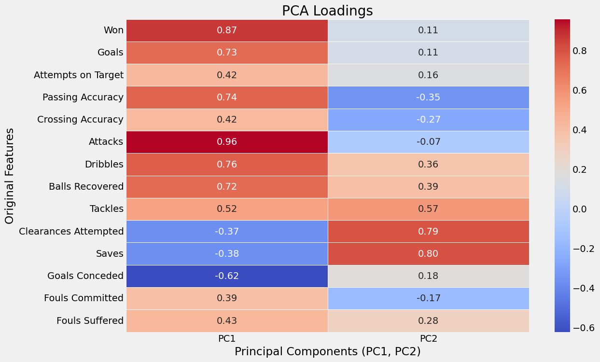
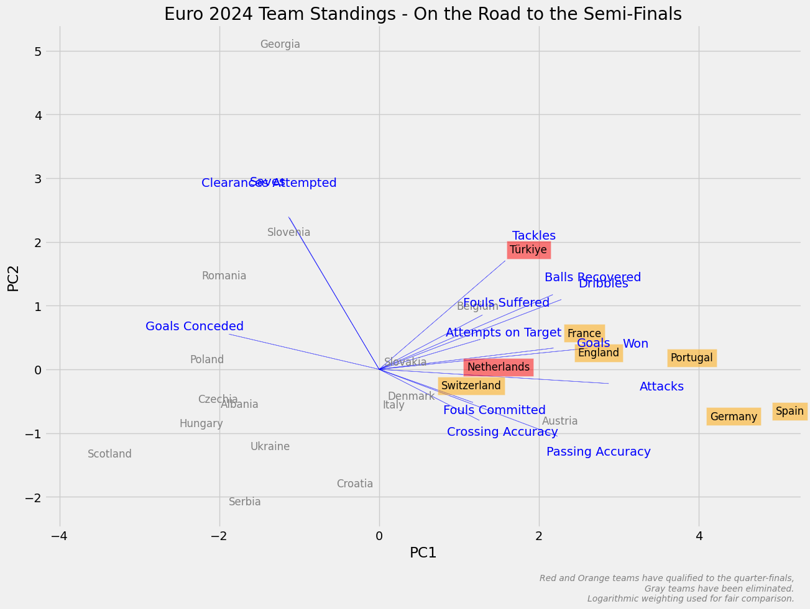
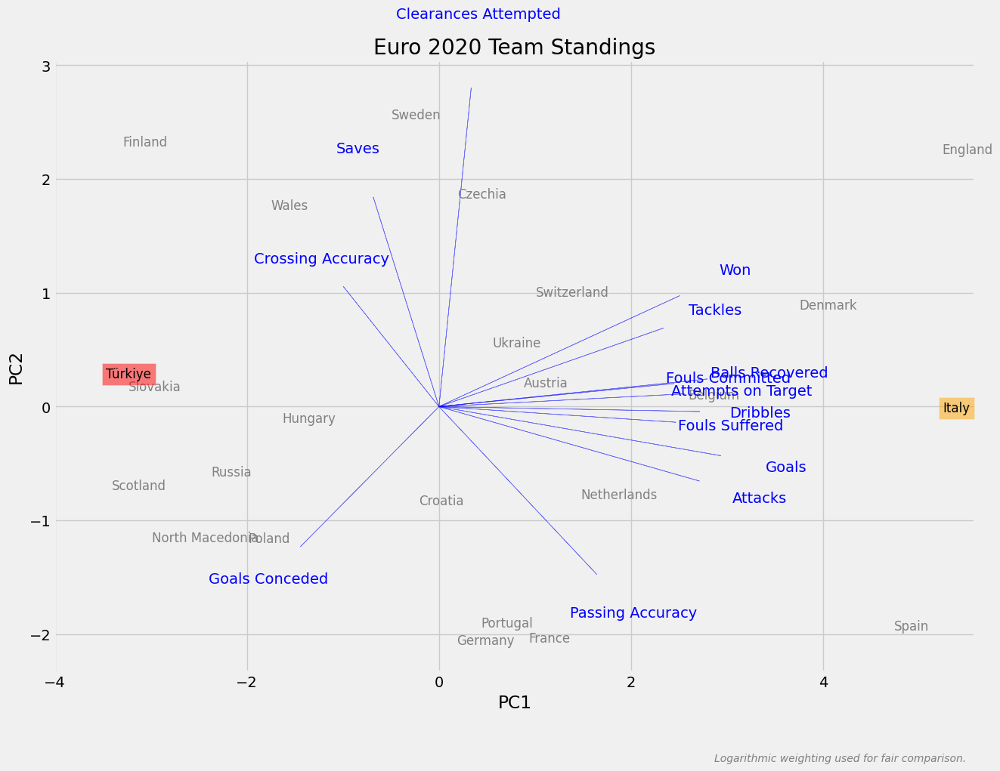
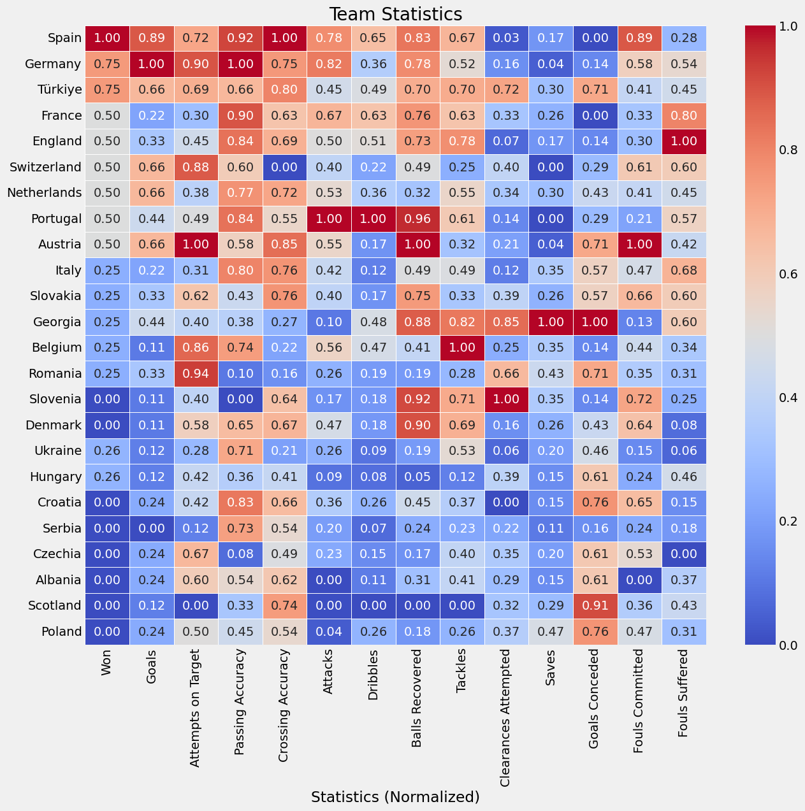
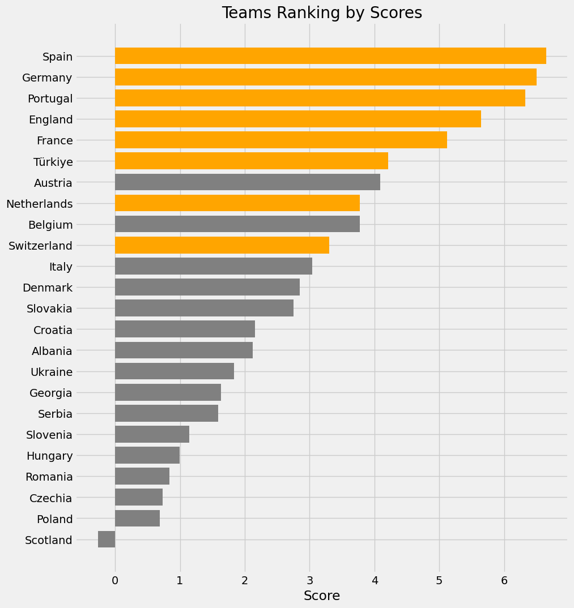
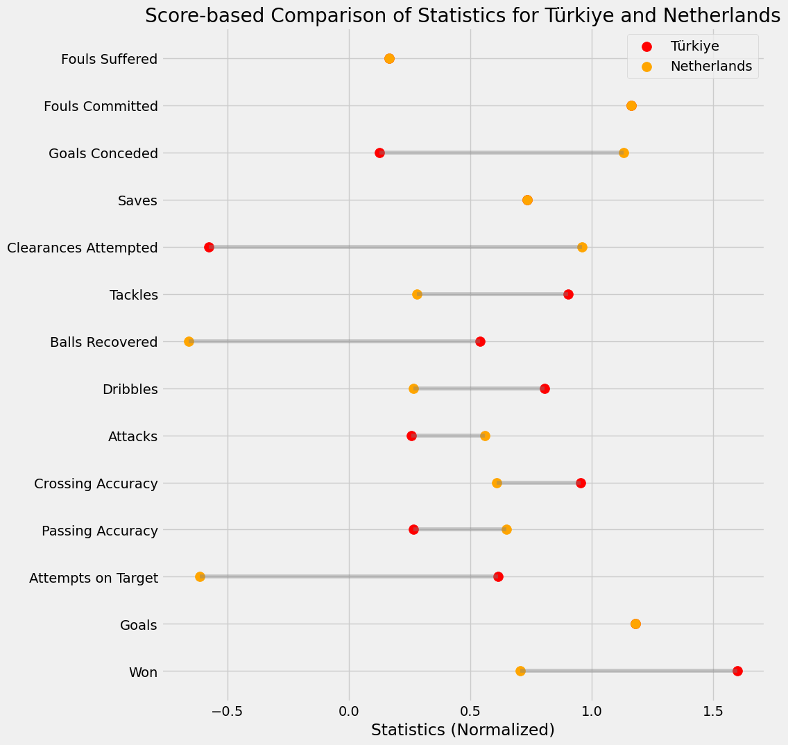
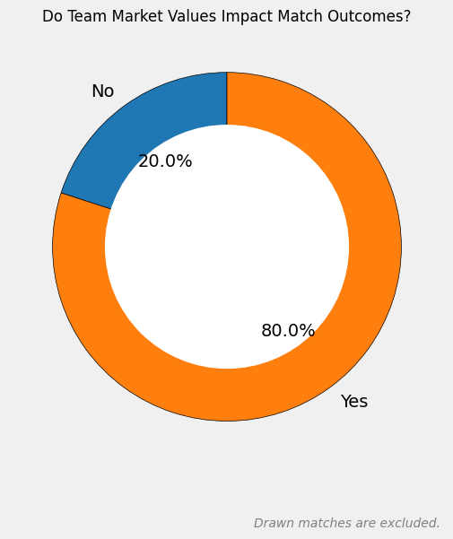
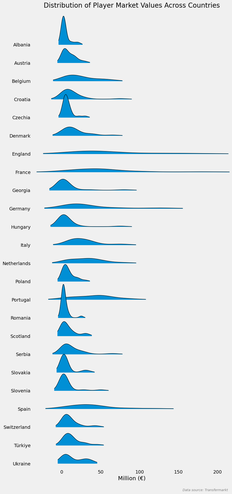
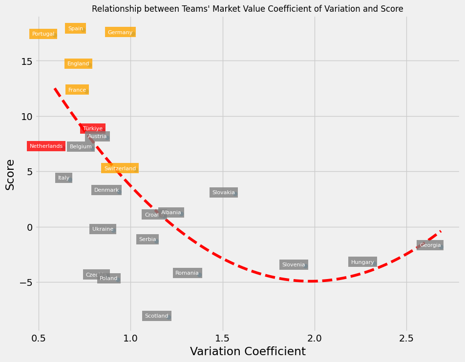

import pandas as pd
import numpy as np
from scipy.optimize import curve_fit
from sklearn.preprocessing import StandardScaler, MinMaxScaler
from sklearn.decomposition import PCA
from joypy import joyplot
import seaborn as sns
import matplotlib.pyplot as plt
plt.style.use('fivethirtyeight')Giriş
Temel Bileşenler Analizi ile 2024 Avrupa Futbol Şampiyonası İlk Grup Maçları Sonrası Takım Konumlarının Belirlenmesi başlıklı çalışmada, takımların konumlarını maç istatistiklerine göre ve Temel Bileşenler Analizi ile belirlemiş ve yorumlamıştık. Şimdi, başta Türkiye olmak üzere yarı final yolundaki takımların konumlarını yine aynı yöntemle belirleyeceğiz ancak bu defa logaritma ile ağırlıklandırılmış verileri kullanacağız. Çünkü, oynanan maç sayısındaki farklılıkların etkisini dengelemek için logaritma ile ağırlıklandırma yapılması önemlidir. Özellikle turnuva süresince takımların oynadıkları maç sayıları değişebilir ve bu, istatistiklerin karşılaştırılabilirliğini etkileyebilir. Logaritmik ölçekleme, daha az maç oynayan takımların istatistiklerinin, daha fazla maç oynayan takımların istatistiklerine kıyasla daha dengeli bir şekilde değerlendirilmesini sağlar. Bu sayede, çeyrek final öncesi takımların performanslarını objektif bir şekilde karşılaştırabiliriz ve Temel Bileşenler Analizi ile pozisyonlarını daha doğru bir şekilde belirleyebiliriz. Genel olarak, daha sağlıklı bir analiz yapabiliriz.
Temel Bileşenler Analizi dışında diğer yöntemlerle de analizi güçlendireceğiz.
Kullanılacak Kütüphaneler
Kullanılacak İstatistikler
Won: (Kazanılan Maç Sayısı / Maç Sayısı) * LN(Maç Sayısı):
Kazanılan Maç Sayısı / Maç Sayısı: Takımın kazandığı maçların toplam maç sayısına oranı. Bu, takımın galibiyet yüzdesini gösterir.
LN(Maç Sayısı): Maç sayısının doğal logaritması alınmış halidir. Bu, maç sayısının büyüklüğünün etkisini dengelemeye yardımcı olur.
Beklenti: Bir takım için ne kadar çok ise o kadar iyi olacaktır. Bir takımın galibiyet oranı ne kadar yüksekse, takımın performansının o kadar iyi olduğunu gösterir. Daha fazla galibiyet, takımın başarılı olduğunu ve rakiplerine karşı üstünlük kurduğunu belirtir.
Goals: (Atılan Gol Sayısı / Maç Sayısı) * LN(Maç Sayısı):
Atılan Gol Sayısı / Maç Sayısı: Takımın maç başına attığı gol sayısı. Bu, takımın maç başına ortalama gol sayısını gösterir.
LN(Maç Sayısı): Maç sayısının doğal logaritması alınmış halidir. Bu, maç sayısının büyüklüğünün etkisini dengelemeye yardımcı olur.
Beklenti: Bir takım için ne kadar çok ise o kadar iyi olacaktır. Bir takımın maç başına attığı gol sayısının yüksek olması, takımın hücum gücünün ve gol atma yeteneğinin iyi olduğunu gösterir. Bu, takımın saldırgan oyun tarzını ve gol yollarındaki etkinliğini vurgular.
Attempts on Target: (Kaleyi Bulan Şut Sayısı / Şut Sayısı) * LN(Şut Sayısı):
Kaleyi Bulan Şut Sayısı / Şut Sayısı: Takımın kaleyi bulan şutlarının toplam şut sayısına oranı. Bu, takımın şutlarının ne kadarının kaleyi bulduğunu gösterir.
LN(Maç Sayısı): Şut sayısının doğal logaritması alınmış halidir. Bu, şut sayısının büyüklüğünün etkisini dengelemeye yardımcı olur.
Beklenti: Bir takım için ne kadar çok ise o kadar iyi olacaktır. Takımın şutlarının kaleyi bulma oranının yüksek olması, takımın şut isabetliliğinin iyi olduğunu gösterir. Kaleyi bulan şutlar, gol olma olasılığı daha yüksek olan şutlardır ve bu da takımın hücum başarısını artırır.
Attacks: (Atak Sayısı / Maç Sayısı) * LN(Maç Sayısı):
Atak Sayısı / Maç Sayısı: Takımın maç başına yaptığı atak sayısı. Bu, takımın maç başına ortalama atak sayısını gösterir.
LN(Maç Sayısı): Maç sayısının doğal logaritması alınmış hali, maç sayısının etkisini dengelemek için kullanılır.
Beklenti: Bir takım için ne kadar çok ise o kadar iyi olacaktır. Bir takımın maç başına yaptığı atak sayısının yüksek olması, takımın hücumda ne kadar aktif ve baskılı olduğunu gösterir. Daha fazla atak, takımın rakip savunmaları zorladığını ve gol atma fırsatları yarattığını belirtir.
Dribbles: (Top Sürme Sayısı / Maç Sayısı) * LN(Maç Sayısı):
Top Sürme Sayısı / Maç Sayısı: Takımın maç başına yaptığı top sürme sayısı. Bu, takımın maç başına ortalama top sürme sayısını gösterir.
LN(Maç Sayısı): Şut sayısının doğal logaritması alınmış halidir. Bu, şut sayısının büyüklüğünün etkisini dengelemeye yardımcı olur.
Beklenti: Bir takım için ne kadar çok ise o kadar iyi olacaktır. Takımın maç başına yaptığı top sürme sayısının yüksek olması, takımın bireysel oyuncularının top sürme yeteneklerinin iyi olduğunu ve savunmaları geçmekte başarılı olduklarını gösterir. Bu, takımın hücumda daha yaratıcı ve dinamik olduğunu belirtir.
Balls Recovered: (Top Ele Geçirme Sayısı / Maç Sayısı) * LN(Maç Sayısı):
Top Ele Geçirme Sayısı / Maç Sayısı: Takımın maç başına gerçekleştirdiği top ele geçirme sayısı. Bu, takımın maç başına ortalama top ele geçirme sayısını gösterir.
LN(Maç Sayısı): Şut sayısının doğal logaritması alınmış halidir. Bu, şut sayısının büyüklüğünün etkisini dengelemeye yardımcı olur.
Beklenti: Bir takım için ne kadar çok ise o kadar iyi olacaktır. Bir takımın maç başına yaptığı top ele geçirme sayısının yüksek olması, takımın savunmada ne kadar etkili olduğunu ve rakipten topu geri alma yeteneğinin iyi olduğunu gösterir. Bu, takımın savunma becerilerini ve rakip atakları durdurma yeteneğini vurgular.
Tackles: (Başarılı Müdahale Sayısı / Müdahale Sayısı) * LN(Maç Sayısı):
Başarılı Müdahale Sayısı / Müdahale Sayısı: Takımın yaptığı başarılı müdahale sayısının toplam müdahale sayısına oranı. Bu, takımın başarılı müdahale yüzdesini gösterir.
LN(Maç Sayısı): Şut sayısının doğal logaritması alınmış halidir. Bu, şut sayısının büyüklüğünün etkisini dengelemeye yardımcı olur.
Beklenti: Bir takım için ne kadar çok ise o kadar iyi olacaktır. Bir takımın başarılı müdahale yüzdesinin yüksek olması, takımın savunmada ne kadar aktif olduğunu ve rakip ataklarını kesme yeteneğinin iyi olduğunu gösterir. Bu, takımın defansif organizasyonunu ve bireysel savunma becerilerini belirtir.
Clearances Attempted: (Denenen uzaklaştırmalar / Maç Sayısı) * LN(Maç Sayısı):
Denenen Uzaklaştırmalar / Maç Sayısı: Takımın maç başına yaptığı denenen uzaklaştırma sayısı. Bu, takımın maç başına ortalama denenen uzaklaştırma sayısını gösterir.
LN(Maç Sayısı): Şut sayısının doğal logaritması alınmış halidir. Bu, şut sayısının büyüklüğünün etkisini dengelemeye yardımcı olur.
Beklenti: Bir takım için ne kadar az ise o kadar iyi olacaktır. Bir takımın maç başına yaptığı denenen uzaklaştırma sayısının az olması, takımın savunmada daha az baskı altında olduğunu ve rakipten gelen tehlikeleri daha az yaşadığını gösterir. Bu, takımın defansif güvenliğini ve topa sahip olma yeteneğini vurgular.
Saves: (Kurtarış / Maç Sayısı) * LN(Maç Sayısı):
Kurtarış / Maç Sayısı: Takımın kalecisinin maç başına yaptığı kurtarış sayısı. Bu, takımın maç başına ortalama kurtarış sayısını gösterir.
LN(Maç Sayısı): Şut sayısının doğal logaritması alınmış halidir. Bu, şut sayısının büyüklüğünün etkisini dengelemeye yardımcı olur.
Beklenti: Bir takım için ne kadar az ise o kadar iyi olacaktır. Bir takımın kalecisinin maç başına yaptığı kurtarış sayısının az olması, takımın savunmada ne kadar sağlam olduğunu ve kalecinin daha az tehlikeli şutlarla karşılaştığını gösterir. Bu, takımın defansif organizasyonunu ve rakipten gelen tehlikeleri sınırlama yeteneğini belirtir.
Goals Conceded: (Yenilen Goller / Maç Sayısı) * LN(Maç Sayısı):
Yenilen Goller / Maç Sayısı: Takımın maç başına kalesine yediği gol sayısı. Bu, takımın maç başına ortalama yediği gol sayısını gösterir.
LN(Maç Sayısı): Şut sayısının doğal logaritması alınmış halidir. Bu, şut sayısının büyüklüğünün etkisini dengelemeye yardımcı olur.
Beklenti: Bir takım için ne kadar az ise o kadar iyi olacaktır. Bir takımın maç başına yediği gol sayısının az olması, takımın savunmada ne kadar etkili olduğunu ve rakiplerin gol atma fırsatlarını sınırladığını gösterir. Bu, takımın defansif gücünü ve kalecinin performansını vurgular.
Fouls Committed: (Yapılan Fauller / Maç Sayısı) * LN(Maç Sayısı):
Yapılan Fauller / Maç Sayısı: Takımın maç başına yaptığı faul sayısı. Bu, takımın maç başına ortalama faul sayısını gösterir.
LN(Maç Sayısı): Şut sayısının doğal logaritması alınmış halidir. Bu, şut sayısının büyüklüğünün etkisini dengelemeye yardımcı olur.
Beklenti: Bir takım için ne kadar az ise o kadar iyi olacaktır. Bir takımın maç başına yaptığı faul sayısının az olması, takımın savunmada ne kadar temiz oynadığını ve rakiplere gereksiz fauller yapmadığını gösterir. Bu, takımın disiplinli oyun tarzını ve defansif becerilerini belirtir.
Fouls Suffered: (Uğranılan Fauller / Maç Sayısı) * LN(Maç Sayısı):
Uğranılan Fauller / Maç Sayısı: Takımın maç başına maruz kaldığı faul sayısı. Bu, takımın maç başına ortalama maruz kaldığı faul sayısını gösterir.
LN(Maç Sayısı): Şut sayısının doğal logaritması alınmış halidir. Bu, şut sayısının büyüklüğünün etkisini dengelemeye yardımcı olur.
Beklenti: Bir takım için ne kadar çok ise o kadar iyi olacaktır. Bir takımın maç başına uğradığı faul sayısının yüksek olması, takımın hücumda ne kadar aktif ve etkili olduğunu ve rakiplerin takımın hücumlarını durdurmak için faul yapmak zorunda kaldığını gösterir. Bu, takımın hücum gücünü ve rakipler üzerinde yarattığı baskıyı vurgular.
Veri Setlerinin İçe Aktarılması
Veri setine buradan ulaşabilirsiniz.
team_stats_df = pd.read_excel('euro_2024_teams.xlsx', sheet_name='Sheet1').set_index('Team').drop(['Matches Played'], axis=1)
team_values_df = pd.read_excel('euro_2024_teams.xlsx', sheet_name='Sheet2')
player_values_df = pd.read_excel('euro_2024_teams.xlsx', sheet_name='Sheet4', header=None)Temel Bileşenler Analizi ile Takım Konumlarının Belirlenmesi
Verilerin Z-Skor ile Normalizasyonu
Z-skor normalizasyonu (ya da Z-skor standardizasyonu), verilerin ortalamasını 0, standart sapmasını 1 yaparak verileri standart bir ölçeğe getirmek için kullanılan bir yöntemdir. Bu yöntem, farklı ölçeklerdeki verileri karşılaştırmak veya belirli analizlerde kullanmak için idealdir.
Z-skoru, her bir veri noktasının, veri setinin ortalamasından ne kadar uzaklaştığını ve bu uzaklığın standart sapmaya göre ne kadar büyük olduğunu gösterir. Bir veri noktasının Z-skoru, o veri noktasının ortalamadan kaç standart sapma uzaklıkta olduğunu belirtir.
Bir veri noktasının Z-skoru şu şekilde hesaplanır:
\(Z=\frac{X-\mu}{\sigma}\)
\(X\): Normalizasyonu yapılacak veri noktası.
\(\mu\): Veri setinin ortalaması.
\(\sigma\): Veri setinin standart sapması.
scaler = StandardScaler()
scaled_team_stats_df = scaler.fit_transform(team_stats_df)Temel Bileşenler ve Yüklemeler
pca = PCA(n_components=2)
principal_components = pca.fit_transform(scaled_team_stats_df)
pca_df = pd.DataFrame(data=principal_components, columns=['PC1', 'PC2'])
pca_df['Team'] = team_stats_df.indexloadings = pd.DataFrame(pca.components_.T, index=team_stats_df.columns, columns=['PC1', 'PC2']) * np.sqrt(pca.explained_variance_)
plt.figure(figsize=(12, 8))
sns.heatmap(loadings, annot=True, cmap='coolwarm', fmt='.2f', linewidths=.5)
plt.title('PCA Loadings')
plt.xlabel('Principal Components (PC1, PC2)')
plt.ylabel('Original Features')
plt.show()
Takım Konumları

Karşılaştırma olması amacıyla bir önceki turnuvada takımların hangi konumlarda olduklarına da bakabiliriz. Bir önceki turnuvanın şampiyonu İtalya olmuştu.

highlight_teams_red = ['Türkiye','Netherlands']
highlight_teams_orange = ['Spain','Germany','Portugal','France','England','Switzerland']
plt.figure(figsize=(14, 10))
sns.scatterplot(x='PC1', y='PC2', data=pca_df, s=100, alpha=0)
for i in range(pca_df.shape[0]):
team_name = pca_df['Team'][i]
if team_name in highlight_teams_red:
plt.text(
x=pca_df.PC1[i]+0.1,
y=pca_df.PC2[i],
s=team_name,
fontdict=dict(color='black', size=12),
bbox=dict(facecolor='red', alpha=0.5)
)
elif team_name in highlight_teams_orange:
plt.text(
x=pca_df.PC1[i]+0.1,
y=pca_df.PC2[i],
s=team_name,
fontdict=dict(color='black', size=12),
bbox=dict(facecolor='orange', alpha=0.5)
)
else:
plt.text(
x=pca_df.PC1[i]+0.1,
y=pca_df.PC2[i],
s=team_name,
fontdict=dict(color='gray', size=12)
)
for i in range(loadings.shape[0]):
plt.arrow(0, 0, loadings.PC1[i]*3, loadings.PC2[i]*3, color='blue', alpha=0.5)
plt.text(loadings.PC1[i]*3.7, loadings.PC2[i]*3.7, loadings.index[i], color='blue', ha='center', va='center')
plt.title('Euro 2024 Team Standings - On the Road to the Semi-Finals')
plt.xlabel('PC1')
plt.ylabel('PC2')
plt.grid(True)
plt.text(
0.99,
-0.15,
'Red and Orange teams have qualified to the quarter-finals,\nGray teams have been eliminated.\nLogarithmic weighting used for fair comparison.',
verticalalignment='bottom',
horizontalalignment='right',
transform=plt.gca().transAxes,
color='gray',
fontsize=10,
fontstyle='italic'
)
plt.show()Takımların Skorları ve Sıralamaları
Takımlar ve Normalize Edilmiş Değerleri
0-1 normalizasyonu (ya da min-max normalizasyonu), verilerin belirli bir aralıkta (genellikle 0 ile 1 arasında) ölçeklenmesini sağlayan bir normalizasyon yöntemidir. Bu yöntem, veri setindeki en küçük değeri 0’a, en büyük değeri 1’e ve diğer tüm değerleri de bu aralıkta uygun bir noktaya ölçekler.
0-1 normalizasyonu, bir veri noktasının yeni ölçeklenmiş değerini şu formül ile hesaplar:
\(X' = \frac{X - X_{min}}{X_{max} - X_{min}}\)
\(X\): Normalizasyonu yapılacak veri noktası.
\(X_{min}\): Veri setindeki en küçük değer.
\(X_{max}\): Veri setindeki en büyük değer.
\(X'\): Normalizasyon sonrası veri noktası.
min_max_scaler = MinMaxScaler()
normalized_team_stats_df = pd.DataFrame(
min_max_scaler.fit_transform(team_stats_df),
columns=team_stats_df.columns,
index=team_stats_df.index
)
plt.figure(figsize=(14, 12))
sns.heatmap(normalized_team_stats_df, annot=True, cmap='coolwarm', fmt='.2f', linewidths=.5)
plt.title('Team Statistics')
plt.xlabel('Statistics (Normalized)')
plt.ylabel('')
plt.show()
Normalize Edilmiş Değerler ile Hesaplanan Skorlar ve Sıralama
16 turu maçında 2-1 yendiğimiz Avusturya’nın sıralamada bizden sonra geldiğini görüyoruz. Çeyrek final maçındaki rakibimiz Hollanda ise Avusturya’dan sonra gelmektedir. Tüm istatistikleri bir araya getirerek aslında genel bir dengenin resmini ortaya koyduğumuz bu sıralamada Hollanda’nın iki sıra önünde olmamız bizim için avantaj oluşturmaktadır.

neg_columns = ['Clearances Attempted', 'Saves', 'Goals Conceded', 'Fouls Committed']
normalized_team_stats_df[neg_columns] = normalized_team_stats_df[neg_columns] * (-1)
normalized_team_stats_df['Score'] = normalized_team_stats_df.sum(axis=1)
normalized_team_stats_df = normalized_team_stats_df.sort_values(by='Score')
highlighted_countries = highlight_teams_red + highlight_teams_orange
colors = ['orange' if country in highlighted_countries else 'gray' for country in normalized_team_stats_df.index]
plt.figure(figsize=(10, 12))
plt.barh(normalized_team_stats_df.index, normalized_team_stats_df['Score'], color=colors)
plt.title('Teams Ranking by Scores')
plt.xlabel('Score')
plt.grid(True)
plt.show()Türkiye ve Hollanda
Hollanda’dan daha iyi olduğumuz istatistikler:
- Kazanılan maç oranı
- Kaleyi bulan başarılı şut oranı
- Açılan başarılı orta oranı
- Maç başına top sürme sayısı
- Maç başına kazanılan top sayısı
- Maç başına müdahale sayısı
Hollanda’nın bizden daha iyi olduğu istatistikler:
- Başarılı pas oranı
- Maç başına hücum sayısı
- Maç başına topu uzaklaştırma girişimi sayısı (bizim daha fazla, negatif etki)
- Maç başına yenilen gol sayısı (bizim daha fazla, negatif etki)
Hollanda ile eşit olduğumuz istatistikler:
- Maç başına gol sayısı
- Maç başına kurtarış (negatif etki)
- Maç başına yapılan faul (negatif etki)
- Maç başına uğranılan faul sayısı

turvned_df = normalized_team_stats_df.loc[['Türkiye', 'Netherlands']].T.drop('Score')
my_range = range(1, len(turvned_df) + 1)
plt.figure(figsize=(10, 12))
plt.hlines(y=my_range, xmin=turvned_df['Türkiye'], xmax=turvned_df['Netherlands'], color='grey', alpha=0.4)
plt.scatter(turvned_df['Türkiye'], my_range, color='red', alpha=1, s=100, label='Türkiye')
plt.scatter(turvned_df['Netherlands'], my_range, color='orange', alpha=1, s=100, label='Netherlands')
plt.legend()
plt.yticks(my_range, turvned_df.index)
plt.title('Score-based Comparison of Statistics for Türkiye and Netherlands')
plt.xlabel('Statistics (Normalized)')
plt.show()Oyuncu ve Takımların Piyasa Değeri
16 turu maçları itibarıyla bir takımın mutlaka galip gelmek zorunda olduğunu göz önüne alarak geçmiş istatistiklerden berabere kalan maçları çıkarırsak, 30 maçın 24’ünü (%80’lik ciddi bir oran) piyasa değeri (turnuva başlamadan önceki değerler) yüksek olan takım kazanmış.
Rakibimiz Hollanda’nın piyasa değeri 784.4 milyon € iken bizim piyasa değerimiz 303.3 milyon €. Buna göre, Hollanda’nın kazanması beklenir ancak 30 maçın 6’sında (%20) piyasa değeri daha az olan takım kazanmış. Örneğin, 2-1 yendiğimiz Avusturya’nın piyasa değeri 252.2 milyon € olsa da Hollanda’yı 3-2 yenmişlerdir.
Piyasa değerinin önemini hafifletmeyeceğiz ama bu istatistiğe de yüzde yüz tutunmayacağız.

team_values_df = team_values_df[team_values_df['Team1 Goals'] != team_values_df['Team2 Goals']]
success = []
for index, row in team_values_df.iterrows():
if (row['Team1 Goals'] > row['Team2 Goals'] and row['Team1 Value'] > row['Team2 Value']):
success.append('Yes')
elif (row['Team1 Goals'] < row['Team2 Goals'] and row['Team1 Value'] < row['Team2 Value']):
success.append('Yes')
else:
success.append('No')
team_values_df['Success'] = success
success_counts = team_values_df.groupby('Success').size()
colors = ['#1f77b4', '#ff7f0e']
fig, ax = plt.subplots(figsize=(8, 6))
ax.pie(success_counts, labels=success_counts.index, autopct='%1.1f%%', colors=colors, startangle=90, wedgeprops={'edgecolor': 'black'})
centre_circle = plt.Circle((0,0),0.70,fc='white')
fig.gca().add_artist(centre_circle)
ax.set_title('Do Team Market Values Impact Match Outcomes?', fontsize=12)
plt.text(
0.99,
-0.15,
'Drawn matches are excluded.',
verticalalignment='bottom',
horizontalalignment='right',
transform=plt.gca().transAxes,
color='gray',
fontsize=10,
fontstyle='italic'
)
plt.show()Takımlara Göre Oyuncuların Piyasa Değerlerinin Dağılımı
Turnuvada ilerledikçe takımların oyuncularına ait piyasa değerinin üstten daha basık, sağa doğru daha yayılmış bir şekilde dağıldığını görüyoruz. Hollanda diğer takımlara pek benzemediği için bizim açımızdan asıl rekabetin yarı final ve finalde olacağını söyleyebiliriz.

columns = [
'Player_Info_1',
'Player_Info_2',
'Player_Info_3',
'Player_Info_4',
'Player_Info_5',
'Player_Info_6',
'Player_Info_7'
]
data_values = []
for i in range(0, len(player_values_df), 4):
player_info = player_values_df.iloc[i:i+4, :].values
age = player_info[3, 0]
matches_played = player_info[3, 2]
market_value = player_info[3, 5]
country = player_info[3, 6]
data_values.append([age, matches_played, market_value, country])
player_values_df = pd.DataFrame(data_values, columns=['Age', 'Int_Matches_Played', 'Market_Value_M', 'Country'])
player_values_df['Market_Value_M'] = player_values_df['Market_Value_M'].replace({'€': '', 'm': 'e6', 'k': 'e3'}, regex=True).astype(float)
player_values_df['Market_Value_M'] /= 1_000_000
market_value_stats_df = player_values_df.groupby('Country')['Market_Value_M'].agg(['mean', 'std']).reset_index()
market_value_stats_df['Variation_Coefficient'] = market_value_stats_df['std'] / market_value_stats_df['mean']
market_value_stats_df = market_value_stats_df.sort_values(by='Variation_Coefficient', ascending=True).set_index('Country')
joyplot(
data=player_values_df[['Market_Value_M', 'Country']],
by='Country',
figsize=(10, 20),
range_style='own',
linewidth=1
)
plt.title('Distribution of Player Market Values Across Countries')
plt.xlabel('Million (€)')
plt.text(
0.99,
-0.05,
'Data source: Transfermarkt',
verticalalignment='bottom',
horizontalalignment='right',
transform=plt.gca().transAxes,
color='gray',
fontsize=10,
fontstyle='italic'
)
plt.show()Takımların Skorları ile Piyasa Değerleri Varyasyon Katsayısı
Varyasyon katsayısı (coefficient of variation), bir ölçümün ortalamasına göre değişkenliğini ölçen bir istatistiksel terimdir. Matematiksel olarak, varyasyon katsayısı aşağıdaki şekilde tanımlanır.
\(CV = \frac{Standart\ Sapma}{Ortalama}\)
Burada:
- Standart Sapma, veri setindeki değerlerin ortalamadan ne kadar uzaklıkta olduğunu ölçen bir metriktir.
- Ortalama, veri setindeki tüm değerlerin aritmetik ortalamasıdır.
Varyasyon katsayıları ile daha önce hesapladığımız skorların ilişkisine baktığımızda ikinci dereceden bir polinomun uygun olduğunu görüyoruz. Turnuvada yola devam eden 8 takımın genel olarak daha düşük bir varyasyon katsayısına sahip olduğu görülüyor.
Hem Türkiye hem de Hollanda, düşük piyasa değeri varyasyonuna sahipler. Bu durum, her iki takımın da oyuncu kalitesinde (piyasa değeri) daha az dalgalanma olduğunu gösterir. Bunun yanında, her iki takım da aşağı yukarı benzer performans skorlarına sahip, bu da iki takımın da sahada benzer seviyede performans gösterdiğini ifade eder.

combined_df = pd.concat([market_value_stats_df, normalized_team_stats_df], axis=1)
plt.figure(figsize=(10, 8))
plt.scatter(combined_df['Variation_Coefficient'], combined_df['Score'], alpha=0.5)
plt.xlabel('Variation Coefficient')
plt.ylabel('Score')
for country in combined_df.index:
x = combined_df.loc[country, 'Variation_Coefficient']
y = combined_df.loc[country, 'Score']
label_color = 'red' if country in highlight_teams_red else ('orange' if country in highlight_teams_orange else 'gray')
plt.annotate(
country,
(x, y),
fontsize=8,
ha='right',
color='white',
bbox=dict(facecolor=label_color, alpha=0.8, edgecolor='none')
)
def func(x, a, b, c):
return a * x**2 + b * x + c
popt, pcov = curve_fit(func, combined_df['Variation_Coefficient'], combined_df['Score'])
x_fit = np.linspace(min(combined_df['Variation_Coefficient']), max(combined_df['Variation_Coefficient']), 100)
plt.plot(x_fit, func(x_fit, *popt), 'r--')
plt.title("Relationship between Teams' Market Value Coefficient of Variation and Score", fontsize=12)
plt.show()Gelecek içeriklerde görüşmek dileğiyle.